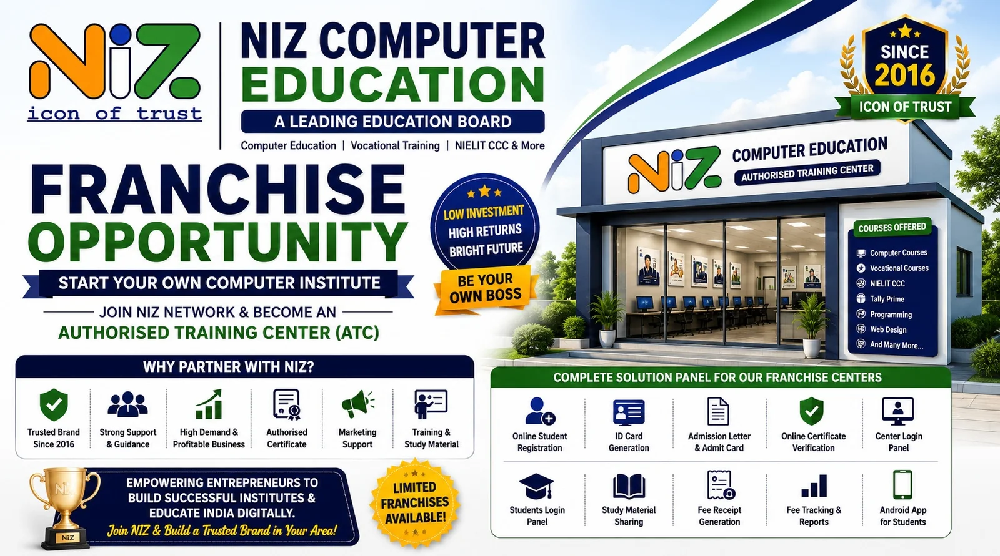

Welcome to NIZ Computer Education
Welcome to NIZ computer education. Learn computer skills and develop your knowledge with practical learning. Our courses are designed to help you succeed in the digital world. Join us today and start your journey towards a brighter future.

Why Choose Us?
- Practical Education Training
- Experienced Guidance
- Web Development Skills
- Computer Application
Frequently Asked Questions
Which Courses are available?
ADCA,DCA,MS office and web Development.
Can beginners learn web development?
Yes, our web development courses are designed for beginners and provide a solid foundation in HTML, CSS, and JavaScript.
What is the duration of the courses?
The duration of our courses varies from 6 months to 2 years, depending on the specific program and level of study.